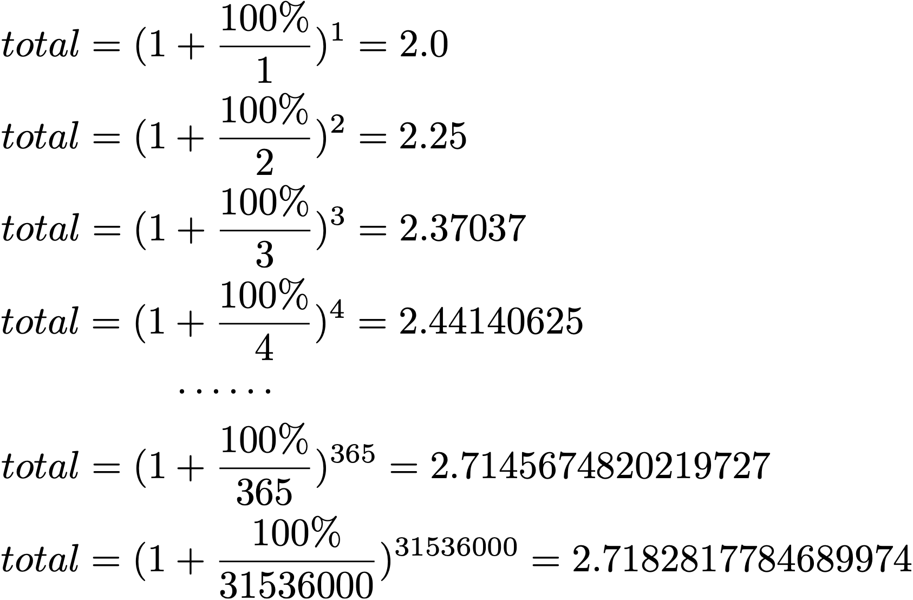

自然底数e
e是一个数学常数，它到底是什么？简单说来，e就是 增长的极限。
利滚利的例子
先举个例子，假设在银行存了1元人民币，而这1元的年息为100%。
如果存够一年取出，那么可以得到1元的利息，连本金余额共2元；
如果半年取一次利息并将利息再次存入，那么各阶段本金加利息余额为(利滚利)：
- 半年后利息加本金：1 + (1 X 0.5) = 1.5
- 一年后利息加本金：1.5 + (1.5 X 0.5) = 2.25
如果每个季度取一次利息并再次存入，各阶段余额为：
- 一季度后利息加本金：1 + (1 X 0.25) = 1.25
- 半年后利息加本金：1.25 + (1.25 X 0.25) = 1.5625
- 三季度后利息加本金：1.5625 + (1.5625 X 0.25) = 1.953125
- 一年后利息加本金：1.953125 + (1.953125 X 0.25) = 2.44140625
……
如果每天都结算一次利息并再次存入(分为365次)，一年后余额为2.7145674820219727元
如果每秒都结算一次利息并再次存入(分为31536000次)，一年后余额为2.7182817784689974元
如果把利息结算时间再变得更小，利滚利的存款余额将越来越接近e；利滚利的次数趋于无穷时，存款余额将无限接近e，即e是存款增长的最大值。
e是增长的极限
上面存款利滚利增长的例子，可以用下面的公式表达
其中rate是单位时间的增长率，在上面的例子中rate=100%表示年利息为100%；n表示将单位时间分为多少份来增长，下图公式是各种时间间隔结算(多少次结算利息并计入本金)一年后的余额(total)。
如果让n趋于无穷，也就是每时每刻都在计算利息存入本金，一年之后余额最多只能也扩大一个确定的倍数，这个极限值就是e，也就是下面的公式。
总结
e的含义：单位时间内，持续的翻倍增长(增长率100%)所能达到的极限值。e和π一样都是内在规律，是被发现出来的数学常数。
参考资料
进一步还可以阅读这篇知乎长文。
这篇文章(An Intuitive Guide To Exponential Functions & e)中给出了很好的说明，在上面的知乎长文中也提到。